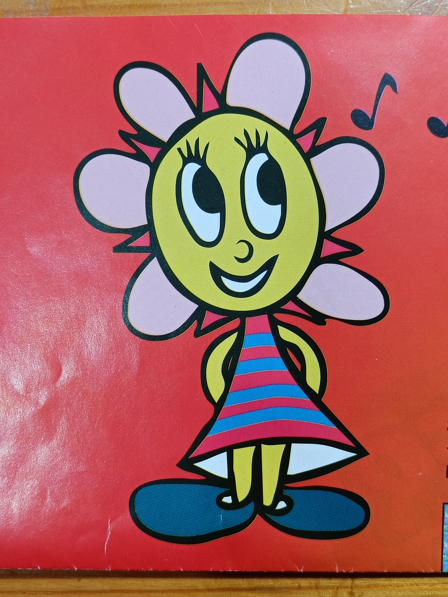

Sunny Funny
by David JonesThe story starts with 3 elements: An Acer netbook from 2008; Haiku the implementation of BeOS (from the 1990s); and, "cling wrap scanning", an ancient pixel tracing technique that uses clear plastic stuck to the monitor.
I remembered i had a barely used Acer netbook in the attic. It turned out to be an Acer ZG5 from 2008 with a 1.6GHz CPU, 1GB of RAM, and a 160GB rotating disk (this configuration isn’t listed on Wikipedia, but whatever).
My Mastodon timeline has been showing me a few Haiku posts, and i found it intriguing. It's a reimplementation of BeOS, an operating system from the 1990s that was something of an obscure darling child.
My Mastodon timeline also showed me this post from Nina Kalinina about "cling wrap scanning". Using a pen and clear plastic film, you take a copy of an existing art. Then put the plastic over the screen (with tape or the magic of cling film) and use an image editor to copy the art with pixels.
So these things came together to form an idea for a project that i might try: Install Haiku on the netbook and find some art suitable for cling wrap scanning on it.
I had seen a few posts about people running Haiku on this class of hardware. After a false start of installing it on a partition which the pre-existing grub couldn’t then boot into, i installed it on the raw unpartitioned disk (i think). Haiku runs reasonably well on the 2008 netbook, which is nice. Maybe it could breathe some life into the old netbook.
A little exploration with Haiku reveals that doing ordinary web things is a disaster, but loading BeOS websites from the early 2000s and before works fine.
Haiku comes with WonderBrush, originally a for-money application native to BeOS, but now distributed liberally. I also tried to install ArtPaint, a more modern paint program, but my initial efforts didn't work. I think because there was no 32-bit version packaged. But i did eventually install it later.
So what art could i "cling wrap scan"? I start looking through my collection of videogame media, and found... This amazing poster from PaRappa the Rapper.

On the back are the instructions and a picture of PaRappa on his own.
I traced over PaRappa using actual clingfilm, and it was terrible. It sticks okay onto the netbook though. But the WonderBrush art program even in fullscreen only lets me use a small portion of the total screen for the editing area. I solved this problem by switching targets: Sunny Funny also appears on the back, and the art is slightly narrower. I traced over Sunny Funny instead, this time using a cut-open ziploc bag from the ones that came with COVID-19 tests. I had to tape the art sideways to fit it over the editable area in WonderBrush.
Here's Sunny:

What resolution? Something chunky and EGA compatible like 320×200 perhaps? I traced using a 200×200 canvas at 200% (i think).

Once i had basic outlines i removed the clear plastic with its pen-drawn copy, and worked by mouse and eye. WonderBrush isn’t really a true pixel editor, and even with the "subpixel" box unchecked it would "half-shade" pixels when i was using the freehand tool with the mouse. Also my mouse skills are bad (possibly exacerbated by use an authentic vintage mouse, and not a pro-gamer laserballs (the trackpad was awful by the way)) and so the actual shapes were not very accurate.

Digital art and pixel editing is not something i've done before, so it took me many many hours of single pixel cleaning and reshaping to get this:

Nice. But needs rotating, right? Simples.
Aha, i can rotate in WonderBrush but... it resamples with some sort of so-called high-fidelity cubic filter. Which for bilevel pixel art is no bloody good. Couldn’t work out how to fix that. Seemingly can’t rotate in the image viewer.
Can install ImageMagick. Yes we can, but it seems not to work.
I also tried both installing and compiling from source
ArtPaint, but that didn’t work either (git works fine by the
way).
So, netpbm? Installs but doesn't work.
At some point while i was poking around i see that in HaikuDepot, the package installer, it sometimes lists two packages wih the same name (i think i added a repository at some point). For practical purposes we can call these two version "cursed" and "uncursed". I wondered if i could install the uncursed version of ArtPaint, and i could!
ArtPaint can do the pixel-exact 90° rotation. But i wasn't finding the pixel editing as comfortable as WonderBrush, so i switched back to that for the rest of the project. Which by this point is filling with colour and drawing the stripes on Sunny's dress.
Here shown with 3× pixels so that it appears reasonable, and possibly without a blurring zoom, on modern displays.

I picked 200×200 partly so it fitted into an EGA display (320×200), so it was natural to use the EGA palette. However, i may have typed one or more of the palette entries incorrectly (and see also subpixel problems below).
There is another problem with this idea of EGA art. On actual EGA hardware the pixel aspect ratio is 1:1.2, whereas i have square pixels. This is only fixable by going back to the scanning step, and using a pixel editor that can edit non-square pixels on a square-pixel display. I don't think that exists.
Filling in reveals some previously unfound subpixels (pixels that are neither black nor transparent); i fixed the ones i found, but it seems likely there might be a few remaining. Probably i will fix this ultimately by writing some sort of equality/difference tool in PyPNG.
Using ArtPaint and WonderBrush, i actually found them annoying for the pixel work. Though I would probably have different opinions if i was more familiar with them. Mainly the problem is that it was too fiddly to turn a single pixel on or off. It's easy enough in WonderBrush to turn a single pixel on, but turning it off either involves moving the mouse to select a new palette entry or right clicking to change the tool. The scrollwheel could be used to zoom, but only zoomed around the canvas centre, not where the mouse is pointing (although it did only stop at integer zooms, which was useful for this work; unlike ArtPaint).
ArtPaint had slightly different issues, but similar in scope.
For many pixels applications, a true full screen mode would be useful. Nina Kalinina wrote a quick-and-dirty homegrown pixel editor in QBasic when she was doing this. And it makes a lot of sense to me. I was tempted.
Reflection
Overall i enjoyed the project. It was nice to install an OS on the netbook that it could plausibly run. It was nice to have an excuse to poke around with Haiku/BeOS a bit. And it was nice to try the lo-tech lo-fi "scanning".
And of course, retro sunflower girl from an iconic 1990s videogame, what's not to like about that?